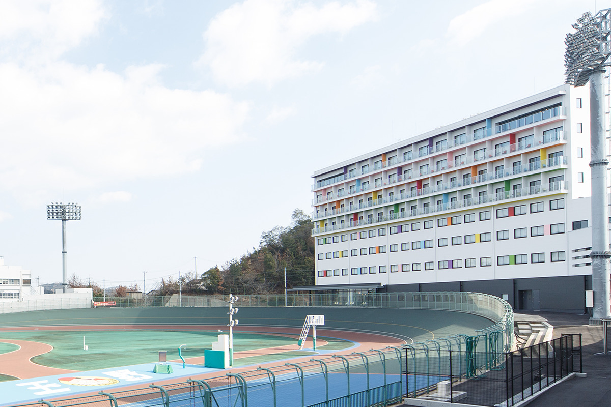
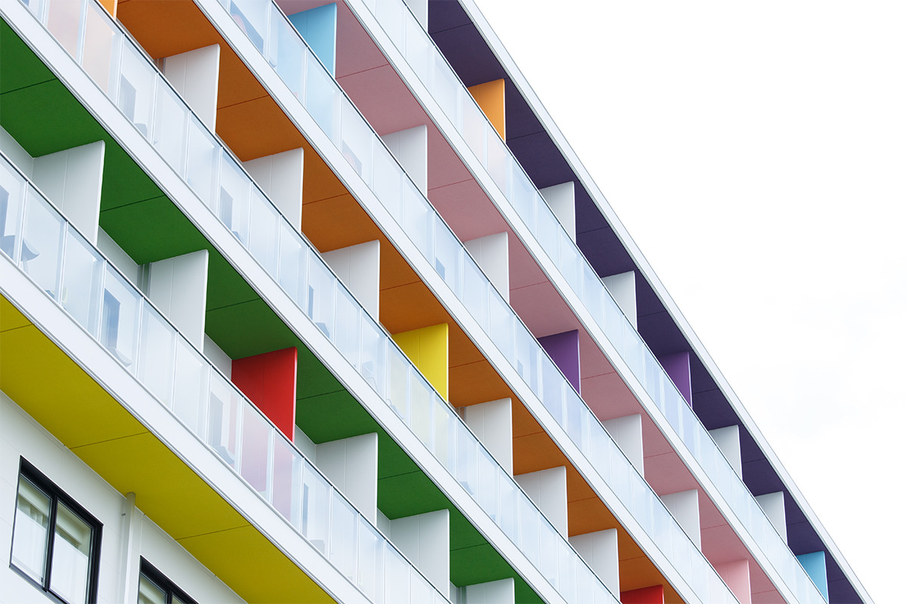
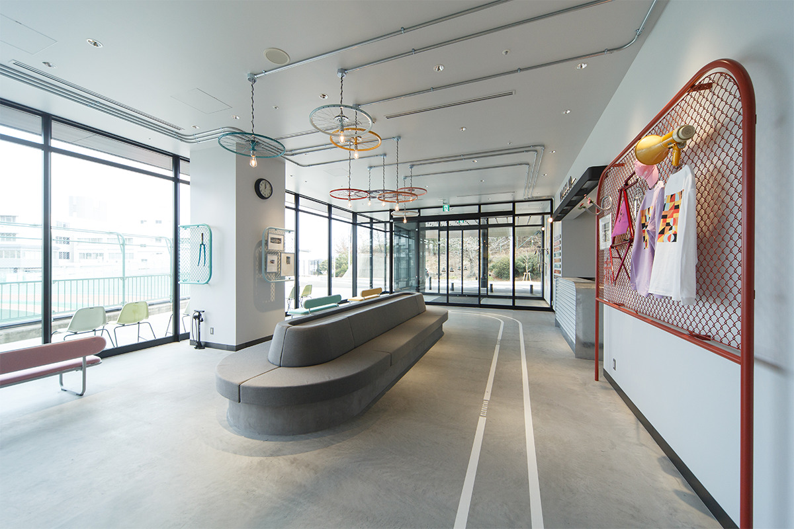
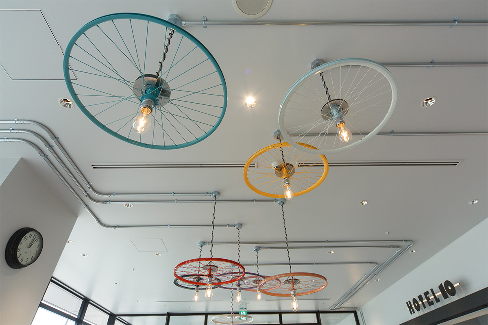
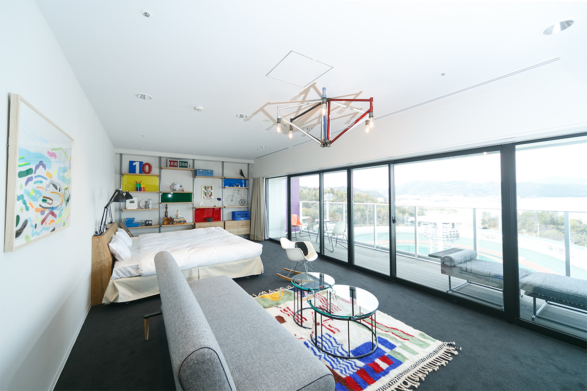
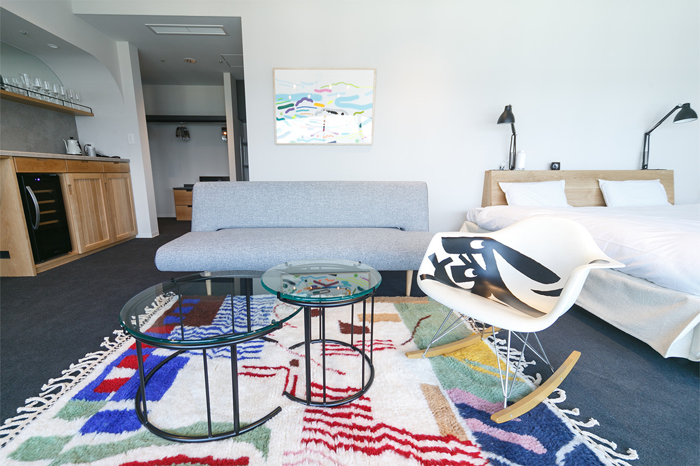
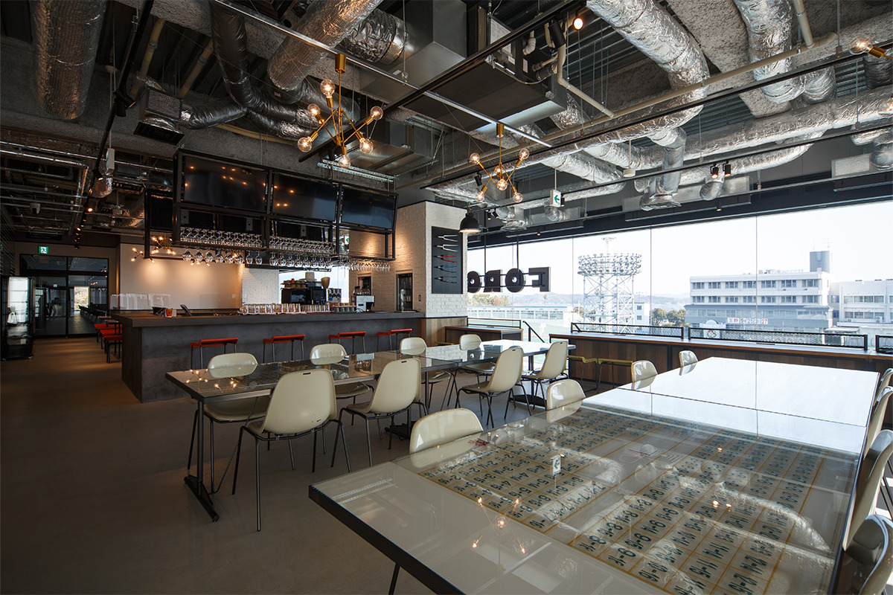
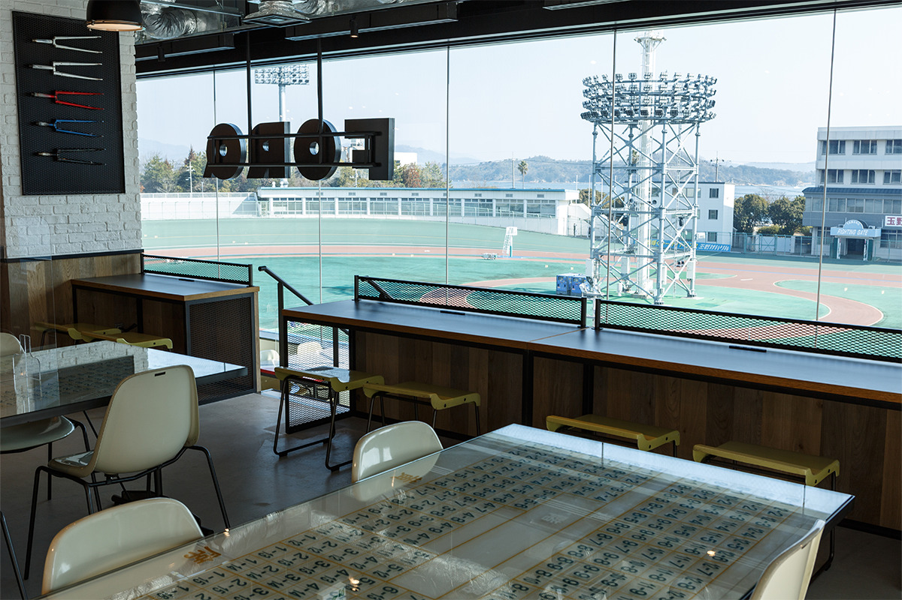
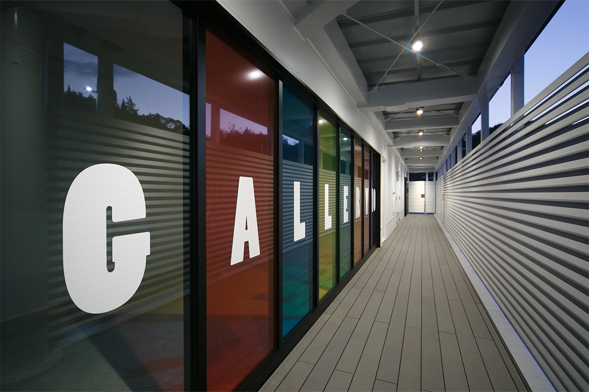
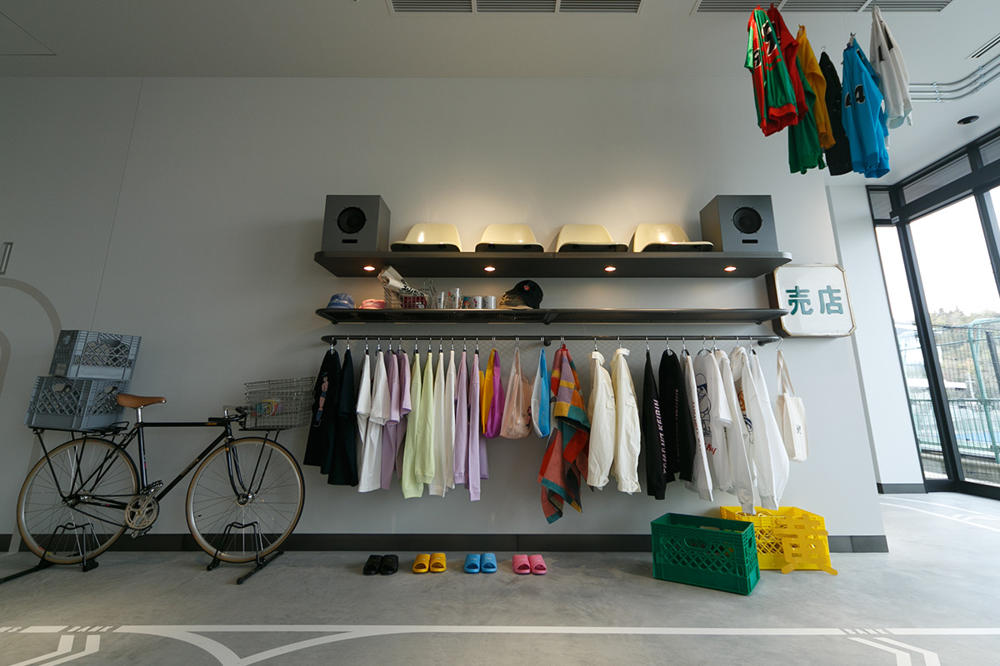

Префектура Окаяма · Тамано · отель
«KEIRIN HOTEL 10»: ночь на велодроме у Внутреннего моря

В Тамано, у Внутреннего моря, в 2022 году открылся первый в Японии отель на территории велодрома для кейрина. Гость здесь спит в «раздевалке», а из окна видит и гонку, и море.
Стадион
Велодром, ставший отелем
В Тамано, у Внутреннего моря, с 1950 года работал велодром для кейрина. Кейрин это гонки на велосипедах по наклонному треку, который называется банком. За семьдесят лет здесь прошло множество знаменитых заездов. В марте 2022 года стадион перестроили, и внутри открылся первый в Японии отель, соединённый с ареной.
Дизайн
Вторая жизнь трибун
Старые трибуны разобрали и пустили в дело. Из нескольких сотен сидений сделали доски: из них собрали вывеску у входа и объекты в холле. Детали гоночных велосипедов стали лампами, столами и предметами интерьера. Везде есть отсылки к велосипеду и кейрину.



Номера
Десятый гонщик
Название отеля обыгрывает правило кейрина: на трек выходят девять гонщиков, а гость становится десятым. Поэтому номера оформлены как стильные раздевалки. Из 149 номеров 126 выходят на банк, откуда видно и гонку, и море. С пятого этажа у каждого номера есть терраса, с которой трек ещё ближе. На восьмом этаже всего два сьюта: с полуоткрытой ванной, видом на море и террасой с садовой мебелью.


Ресторан
FORQ
В ресторане на втором этаже трибунной секции подают пряные блюда из продуктов Сэтоути и собственные десерты. У окон места развёрнуты к треку, и за едой можно смотреть гонку. В дни без заездов здесь включают трансляции на экране. Классическую кухню частично консультировал известный токийский ресторан «Хэндрикс».


Галерея
KEIRIN GALLERY
На втором этаже отеля постоянно работает выставочный зал о кейрине. Здесь есть и основная информация о гонках, и уголок «Футомомо хироуз» о местных гонщиках Окаямы, и зона, где можно почувствовать силу спортсменов.

Магазин
Вещи с велосипедным характером
В магазине продают вещи с весёлыми велосипедными принтами: кепки, футболки, сумки, сандалии, больше десяти видов. Многое сделано вместе с художниками.

KEIRIN HOTEL 10
- Адрес
- префектура Окаяма, Тамано, Тикко, 5-18-3
- Телефон
- +81 863-31-0555 (10:00–19:00)
- Номера
- 149
- Цены
- в 2022 году от 9 900 до 53 900 иен за номер за ночь с двумя приёмами пищи; актуальные смотрите на сайте
- Заезд / выезд
- 15:00 (последний заезд 22:00) / 10:00